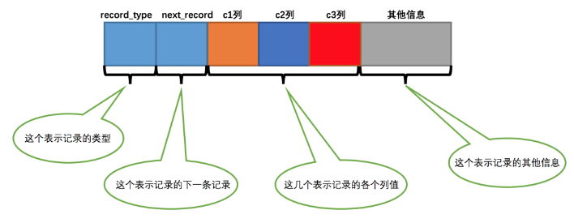
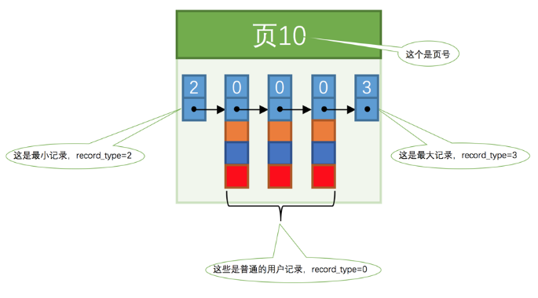

MySql-深入理解B+树索引
MySql-深入理解B+树索引
前言—没有索引的查找
在正式介绍 索引 之前，我们需要了解一下没有索引的时候是怎么查找记录的。我们下边先只唠叨搜索条件为对某个列精确匹配的情况，所谓精确匹配，就是搜索条件中用等于 = 连接起的表达式，比如这样：
1 | SELECT [列名列表] FROM 表名 WHERE 列名 = xxx; |
1、在一个页中的查找
假设目前表中的记录比较少，所有的记录都可以被存放到一个页中，在查找记录的时候可以根据搜索条件的不同分为两种情况：
以主键为搜索条件
这个查找过程我们已经很熟悉了，可以在 页目录 中使用二分法快速定位到对应的槽，然后再遍历该槽对应分组中的记录即可快速找到指定的记录。
以其他列作为搜索条件
对非主键列的查找的过程可就不这么幸运了，因为在数据页中并没有对非主键列建立所谓的 页目录 ，所以我们无法通过二分法快速定位相应的 槽 。这种情况下只能从 最小记录 开始依次遍历单链表中的每条记录，然后对比每条记录是不是符合搜索条件。很显然，这种查找的效率是非常低的。
2、在很多页中查找
大部分情况下我们表中存放的记录都是非常多的，需要好多的数据页来存储这些记录。在很多页中查找记录的话可以分为两个步骤：
- 定位到记录所在的页
- 从所在的页内中查找相应的记录
3、总结
在没有索引的情况下，不论是根据主键列或者其他列的值进行查找，由于我们并不能快速的定位到记录所在的页，所以只能从第一个页沿着双向链表一直往下找，在每一个页中根据我们刚刚唠叨过的查找方式去查找指定的记录。因为要遍历所有的数据页，所以这种方式显然是超级耗时的，如果一个表有一亿条记录，使用这种方式去查找记录那要等到猴年马月才能等到查找结果。
索引
我们先建一个表：
1 | CREATE TABLE index_demo( |
为了我们理解上的方便，我们简化了一下 index_demo 表的行格式示意图：

把一些记录放到页里边的示意图就是：

本博客所有文章除特别声明外，均采用 CC BY-NC-SA 4.0 许可协议。转载请注明来自 Maple's Blog！
 微信
微信